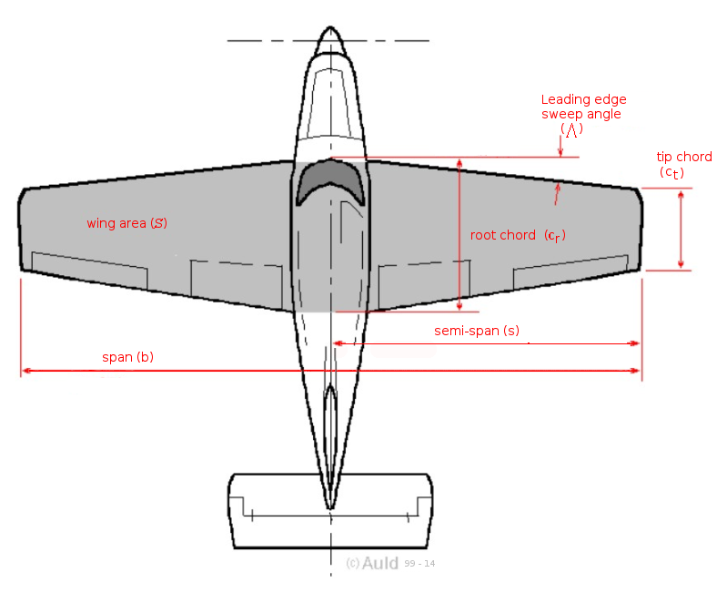

AIRCRAFT WEIGHT AND GEOMETRY
Weight
The weight (W) of the aircraft and its aerodynamic properties are the primary factors determining its flight performance. The weight of the aircraft can be broken down into fundamental components:
- the empty weight of the vehicle;
- the weight of the pilot, passengers and payload;
- the weight of the fuel.
There will be limiting weight values due to the aircraft design and flight regulations:
- maximum weight of payload;
- maximum fuel load or fuel tank capacity;
- maximum take-off weight (MTOW);
- maximum landing weight.
It is not simply a matter of adding the components together to obtain a final answer for the aircraft weight. For example it may be necessary to remove fuel weight so that additional payload may be carried while still maintaining the requirement of a maximum take-off weight. For stability and hence flight safety considerations an accurate "weight and balance" calculation should be performed prior to the flight of the aircraft.
In flight the aircraft weight will change as fuel is burnt by the propulsion system or possibly dumped in an emergency situation. All the weight specifications will need to be identified from data given by the aircraft manufacturer before force equilibrium calculations can be applied.
Aircraft Geometry
A typical aircraft planform layout is shown in the following Figure.

$S$ -- Wing Planform Area,
$s$ -- Wing Semi-span,
$b$ -- Wing Span, $b$=2$s$.
The wing planform area ( $S$ ) is shaded as shown. The wing taper ratio can be calculated as the ratio of tip chord to root chord,
$$λ=c_t/c_r$$
The mean aerodynamic chord can be found by integrating the individual section chords across the span.
\[ \text"MAC"=c↖{-}={∫_{-s}^{+s} c^2 .dy}/{∫_{-s}^{+s}c.dy} \]
Where
$$S=∫_{-s}^{+s}c.dy$$
For wings with simple linear taper, the mean aerodynamic chord will roughly equal the mean geometric chord,
$$c↖{-}=c_{avg}=S/b$$
The aspect ratio of the wing will be,
$$AR = b^2/S$$
and for wings with rectangular planform this will simplify to,
$$AR=b/c$$
Aspect ratio will play a major part in the efficient performance of an aircraft.